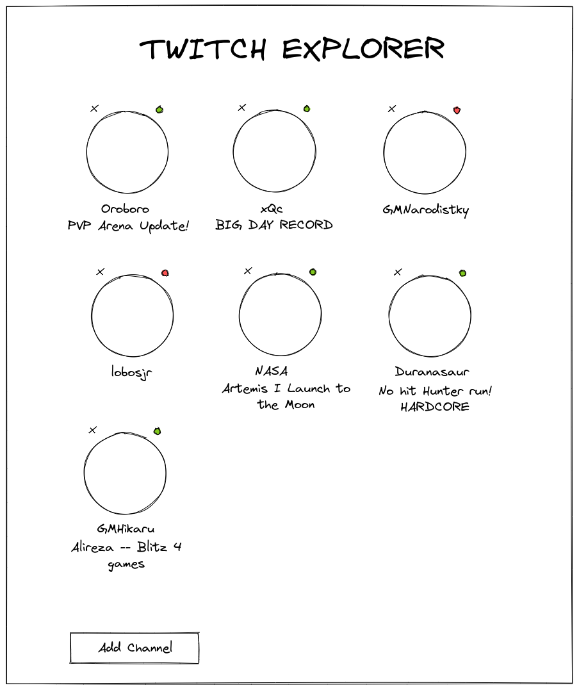
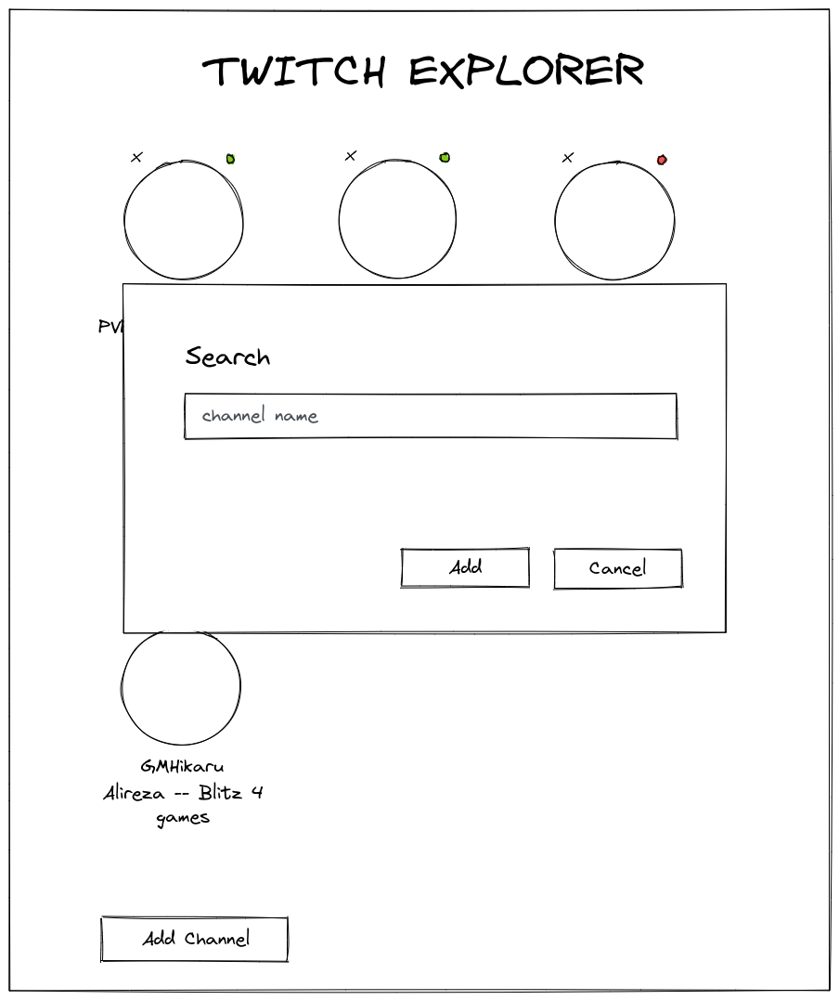

Junior Frontend Tests - Twitch Explorer
Wouldn't it be nice to have a way of quickly checking which of your favourite streamers are online? Well let's build it!
The objective of this test is to build a webapp that let's you add Twitch users profiles to a home page where it lists wheter or not they are online, and provide a quick link to the stream. Like so:


Requirements
- Each streamer element should include:
- The streamer profile picture.
- The streamer name.
- The streamer stream title, only if they are currently online.
- A green/red indicator according to the online status.
- An "X" button to permanently remove the streamer from the list.
- When clicking a streamer element, it should open the current stream if they are online or the profile if they are offline.
- The app must be responsive and usable in mobile too. As the screen shrinks, the list should adapt.
- When clicking the "Add" button, a popup should appear to let the user input a channel name to add to the list. If no channel is found, nothing should happen.
- The list should be persistent even if the user closes the app.
Notes
You will need to obtain a Twitch API access token https://dev.twitch.tv/docs/api/reference.
You can check the Twitch API here https://dev.twitch.tv/docs/api/reference.
Good luck!